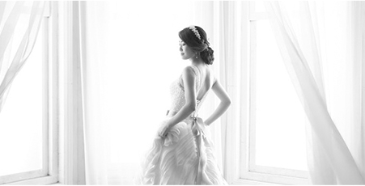
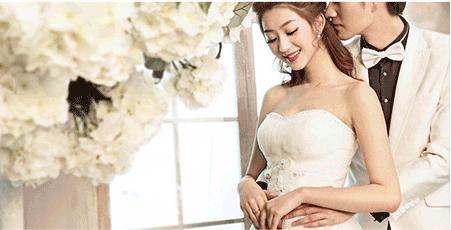

金夫人婚纱摄影是在国家改革开放政策的指引下成长起来的重庆首家外商独资企业。1989年，金夫人以6.5万美元的注册资金，迈出艰苦创业的第一步。最初金夫人的店面是在解放碑邹容路重庆剧场的地下室，面积只有380平方米，后期制作也同在一间地下室，条件非常艰苦，只有19个人,一个人干几个人的事,金夫人集团创始人周生俊先生事事亲历亲为，用实际行动感染着每一位员工的工作激情。
金夫人是重庆专业婚纱影楼。当时，重庆很少人懂婚纱照，只知道结婚要拍“拍拍照”，而一般人每月的平均工资不过70元左右，金夫人的拍照定价却为98元/套和178元/套两种，比月均工资还要高，顾客们望而却步。生意冷清的局面持续了大半年，但随着改革开放进程的加快，人们的消费观念开始成熟起来，金夫人改变了重庆地区人们对结婚照的认知，逐渐形成了现代婚纱摄影的新观念，并辐射重庆各地，结婚要拍一套婚纱照逐渐成为年轻新人们的一种时尚
1994年10月18日，金夫人从最初的邹容路地下室搬迁到解放碑会仙楼一家饮食服务公司的宾馆门面，虽然也是地下室，但金夫人的规模已在逐步扩大。
一直秉承“至尊·至善·至美”的企业理念，金夫人经历了近5年的艰苦创业期，以追求高质量、高水准的摄影、化妆造型，优质的服务水准在重庆站稳了脚跟。几年的文化沉淀，已经让“金夫人”这三个字深入老百姓的心中，九十年代初期，重庆大街小巷只要一提到拍婚纱照，都知道要到金夫人。
 